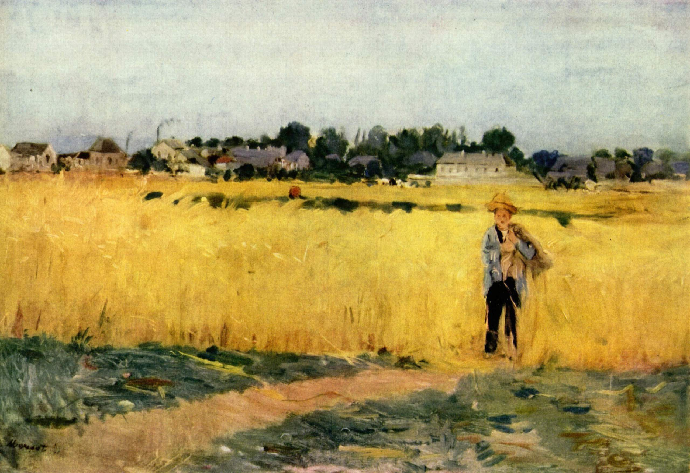

Tags: autumn, countryside, fields-and-plains
Style: Impressionism
Artist: Morisot Berthe
Title: In the Wheatfield at Gennevilliers
Year: 1875
Genre: genre painting
Categories: geyser (73.9%); bison (8.7%); hay (5.4%); harvester (3.0%); barn (1.3%)